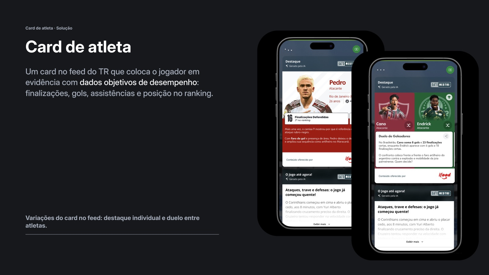
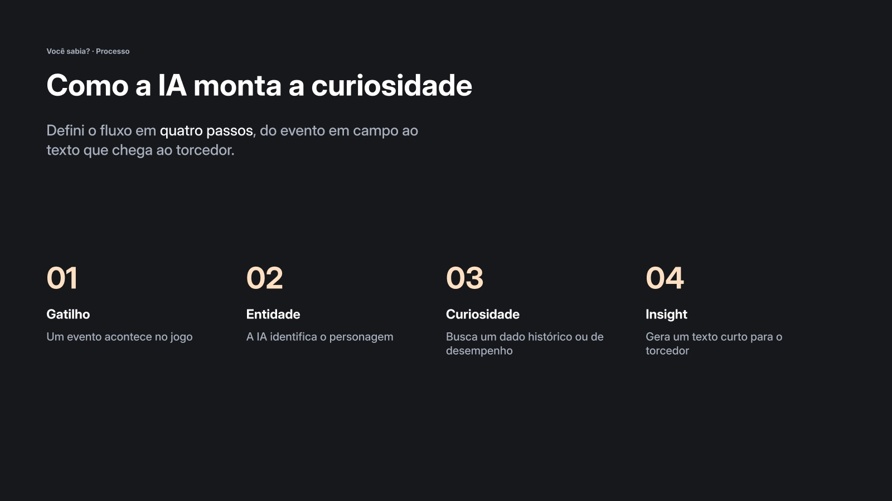
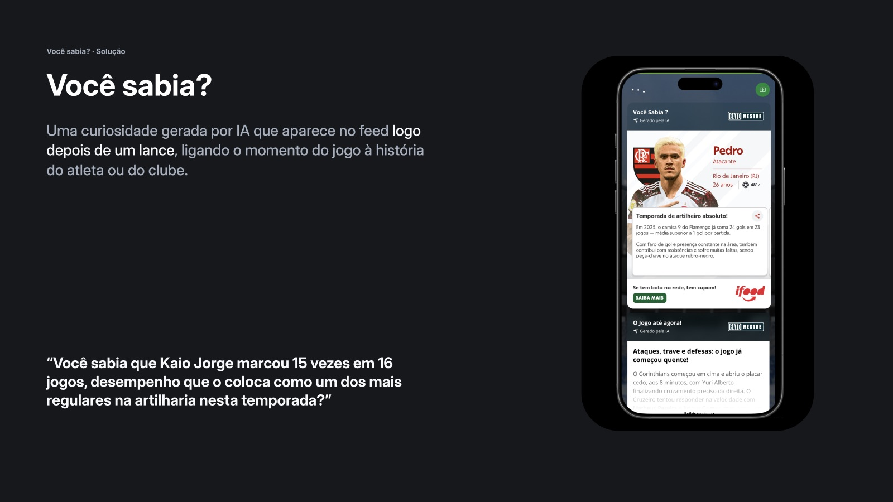

Globo · ge
Quando o dado vira história: dois cards para o Tempo Real do ge
Card de atleta e Você sabia?: duas apostas com a mesma base de dados e destinos diferentes, uma no ar e outra pausada antes do desenvolvimento.

01 · Contexto
Números soltos, sem a história por trás
O Tempo Real (TR) é onde o torcedor acompanha o jogo lance a lance no ge. Tudo acontece ao mesmo tempo, e os dados chegam como números soltos, sem a história que existe por trás deles.
Meu papel: entrei na fase final do projeto e levei os dois cards da definição à entrega: estados, fluxo da IA, copy, testes de usabilidade, alinhamento com o editorial e handoff.
02 · Problema
Qual história merece ser contada agora?
Objetivo de negócio: aumentar o engajamento e o tempo médio de consumo no TR. De design: transformar dados históricos e de desempenho em informação fácil de ler no meio da partida.
03 · Processo
Duas apostas, dois caminhos
O projeto partiu de mais de 40 ideias de cards com dados históricos, priorizadas pelo time por impacto x esforço. Três formatos foram escolhidos, e meu foco foram dois deles.
- Card de atleta: desempenho do jogador de forma direta e escaneável, com dados da partida e da temporada.
- Você sabia?: uma curiosidade gerada por IA logo depois de um lance, ligando o momento à história do atleta ou do clube.

04 · Solução
Do desenho ao ar, do conceito ao teste
O Card de atleta seguiu o ciclo completo: estados e variações, copy e hierarquia, alinhamento com o editorial, handoff, implementação, teste e lançamento.
O Você sabia? foi desenhado em duas camadas de história: micro (desempenho que se destaca na partida) e macro (recordes, tabus e rivalidades). Antes do desenvolvimento, foi para um teste de usabilidade no contexto do TR.

05 · Resultados
Dois cards, dois destinos
No teste, durante a partida, a curiosidade não despertou interesse: a atenção estava no lance. Por isso o Você sabia? não seguiu para o desenvolvimento.
06 · Aprendizados
O que levo deste projeto
- O momento importa tanto quanto o conteúdo.
- Testar antes de construir economizou esforço do time.
- Um “não” no teste também é resultado: ele direciona a próxima aposta.
Próximos passos: levar o Você sabia? para momentos fora do calor do lance, como o pré-jogo (freguesia, tabu, lei do ex) e o pós-jogo.
Próximo projeto
GloboPop · Microdramas & Novelinhas
Globo · ge
When data becomes a story: two cards for ge’s live coverage
Athlete card and Did you know?: two bets on the same data with different outcomes, one shipped and one paused before development.
01 · Context
Loose numbers, without the story behind them
Tempo Real (TR) is where fans follow the match play by play on ge. Everything happens at once, and the data arrives as loose numbers, without the story behind them.
My role: I joined in the final phase of the project and took both cards from definition to delivery: states, AI flow, copy, usability tests, alignment with the editorial team and handoff.
02 · Problem
Which story deserves to be told right now?
Business goal: increase engagement and average consumption time in TR. Design goal: turn historical and performance data into information that’s easy to read in the middle of a match.
03 · Process
Two bets, two paths
The project started from 40+ card ideas using historical data, prioritized by the team by impact x effort. Three formats were chosen, and I focused on two of them.
- Athlete card: the player’s performance in a direct, scannable way, with match and season data.
- Did you know?: an AI-generated fact right after a play, linking the moment to the athlete’s or club’s history.
04 · Solution
From design to live, from concept to test
The Athlete card went through the full cycle: states and variations, copy and hierarchy, editorial alignment, handoff, implementation, testing and launch.
Did you know? was designed in two layers of story: micro (standout performance in the match) and macro (records, streaks and rivalries). Before development, it went into a usability test in the TR context.
05 · Results
Two cards, two outcomes
In the test, during the match, the fact didn’t spark interest: attention was on the play. That’s why Did you know? didn’t move on to development.
06 · Learnings
What I take from this project
- Timing matters as much as content.
- Testing before building saved the team’s effort.
- A “no” in a test is also a result: it points to the next bet.
Next steps: bring Did you know? to moments outside the heat of the play, like pre-match (head-to-head records, streaks) and post-match.
Next project
GloboPop · Microdramas & Soaps